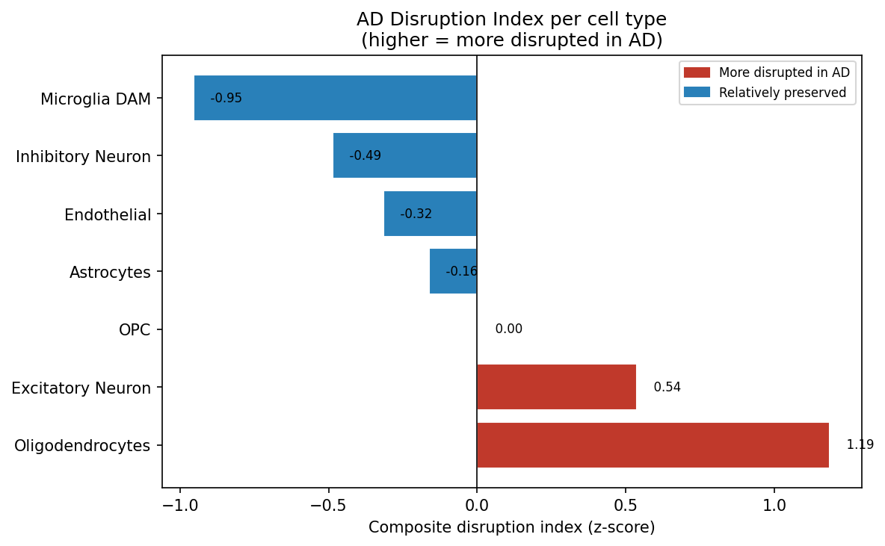
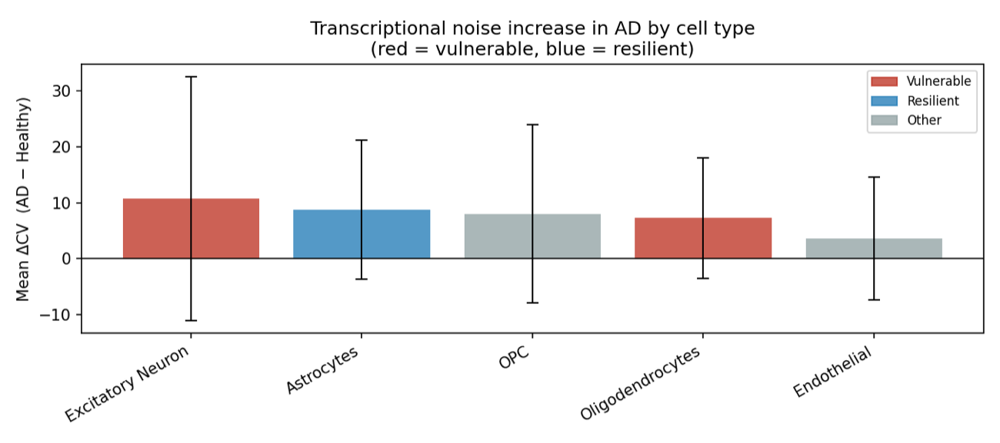

Independent research project · 2026
Spatial transcriptomics of human Alzheimer's cortex
I asked how the cellular architecture of human cortex is reorganised in Alzheimer's disease, and whether a model can learn that organisation. The oligodendrocyte lineage turned out to be the main axis of disruption: more numerous, less oligodendrocyte-like, arrested in maturation, and concentrated in the pathological zones.
Graphical summary
The project in one picture
From a tissue section to a tested claim.
Questions
How is the cellular architecture of human cortex reorganised in Alzheimer's disease, and is that reorganisation spatially structured?
Can machine learning learn cell-type identity from expression and spatial context, and does it transfer across tissue regions and across disease state?
What I did
The data are a public 10x Genomics Xenium dataset: one Alzheimer's and one matched healthy section of human cortex, prepared and processed the same way.
Quality control
Per-cell and per-gene filtering, with the detection gap between the two sections documented up front.
Clustering and annotation
Leiden clustering and marker-based cell-type annotation, tuned separately for each section.
Composition and identity
How cell-type proportions shift, and whether each type still expresses its defining programme.
Spatial statistics
Neighbourhood enrichment and Moran's I to test whether cell types and genes are spatially organised.
Spatial zoning
A transcriptional pathology index divides the Alzheimer's section into AD-hot and preserved zones.
Differential expression
Zone against zone, globally and within each cell type, with gene-set and transcription-factor activity.
Trajectory and noise
Pseudotime along OPC to oligodendrocyte maturation, transcriptional noise, and an integrated disruption index.
Machine learning
Cell-type classifiers tested with a random split, a spatial hold-out, and transfer between the two sections.
External validation
Core oligodendrocyte findings checked against the independent SEA-AD atlas.
Key findings
Each finding links to the section of the repository that shows the evidence.
The oligodendrocyte lineage is the main axis of disruption in this tissue, rising from 19.7% to 36.0% of cells.
Pathology is spatially zoned: AD-hot zones are about 58% oligodendrocyte, Preserved zones about 15%.
The myelin programme fragments rather than simply declining; different myelin genes move in opposite directions.
Core oligodendrocyte claims replicate in SEA-AD, an independent cohort (MAG, FDR 0.019).
Limits stated up front: one section per condition, and a detection gap (median 28 vs 69 genes per cell) that confounds cross-section differential expression.
Classifiers trained on the Alzheimer's section and tested on the healthy one generalise better (macro F1 about 0.59) than the reverse (about 0.43), across every model family tested.
Figures
From the analysis notebooks.





Limitations
Stated in the repository before any result. This is research and a portfolio project, not a clinical tool.
One tissue section per condition, so there is no biological replication.
A detection gap between sections (median 28 against 69 genes per cell) confounds direct cross-section comparisons; the analysis is built to avoid depending on them.
A targeted gene panel, not the whole transcriptome: tau (MAPT) is not measured, and the pathology index is a transcriptional proxy.
Cell types are annotated from markers, not confirmed by a pathologist.
The results are correlational; nothing here establishes cause or the order of events.